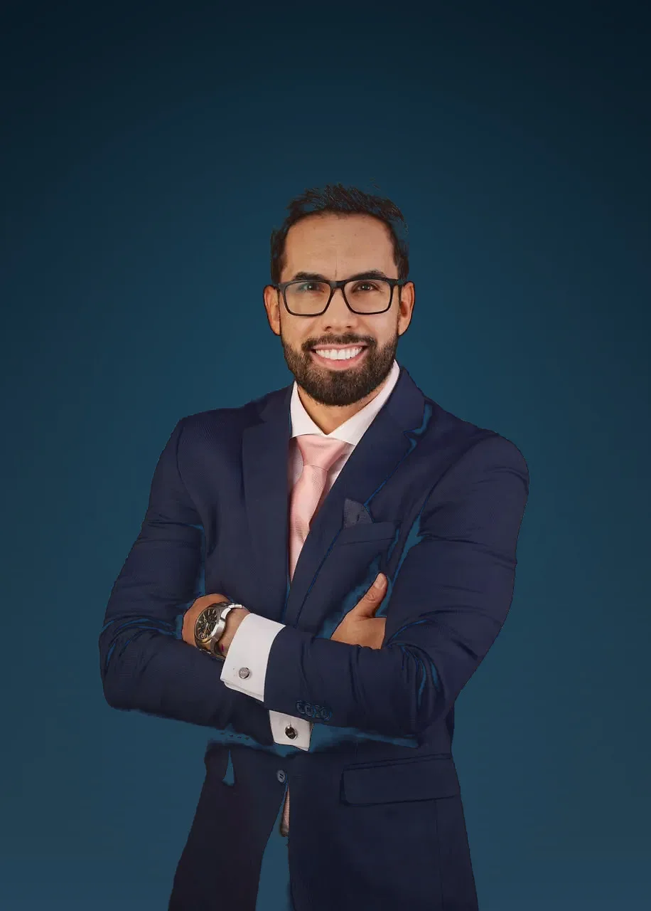
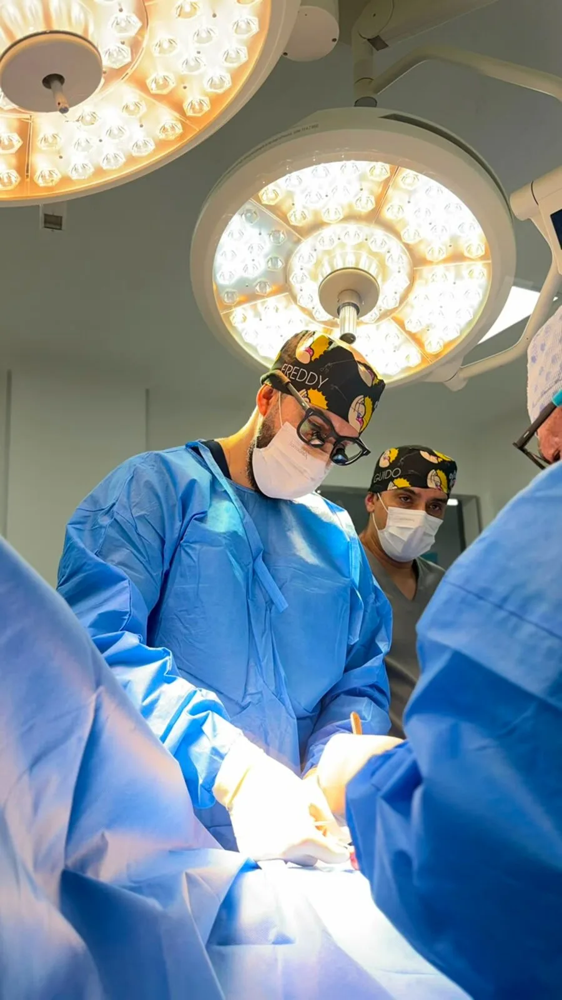
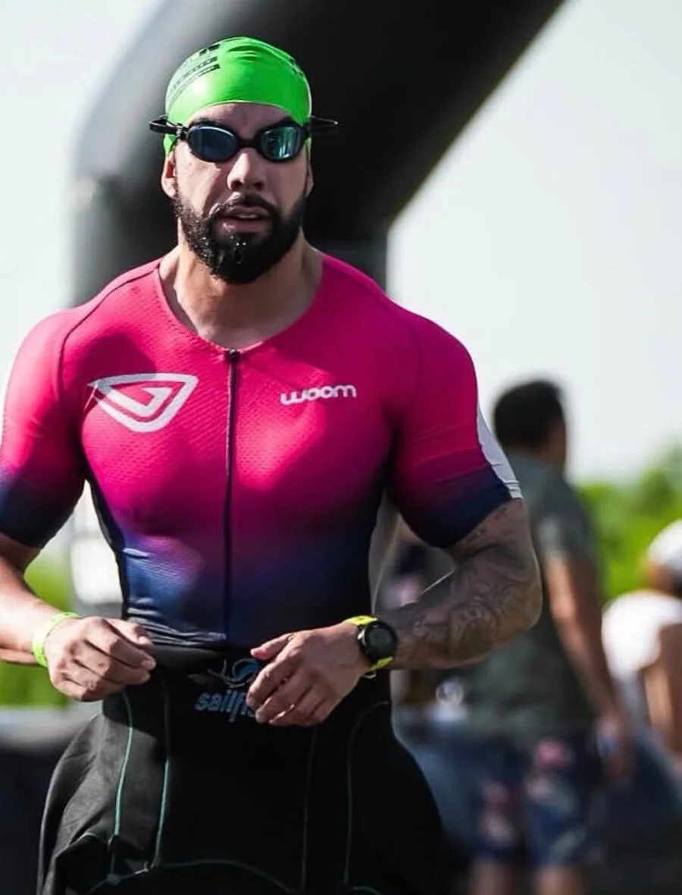
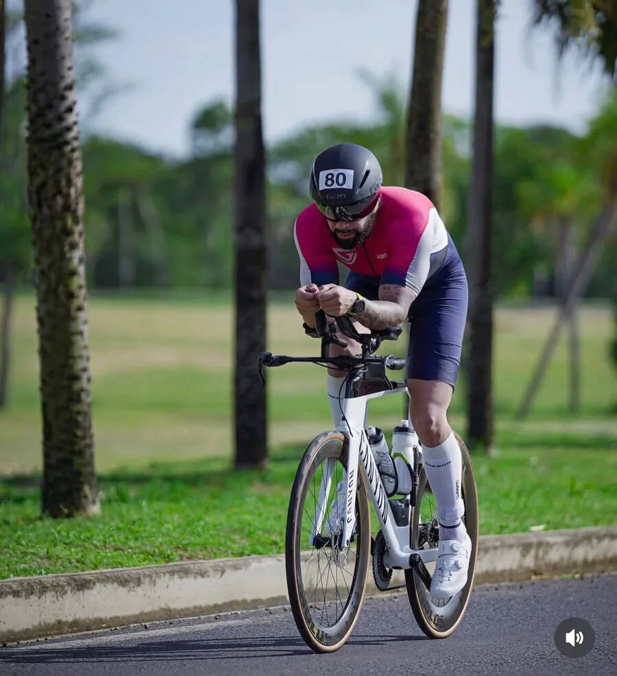

01
Cirugía pediátrica mínimamente invasiva
Video y microinstrumentos en lugar del bisturí tradicional. Incisiones milimétricas, con menos dolor, menos cicatriz y una recuperación más rápida.

Cirugía pediátrica · Ciudad del Este
Cirujano pediátrico dedicado a la cirugía mínimamente invasiva: cuidando a los pacientes más chiquitos con la mayor precisión posible.

Freddy VelazquezEl Dr. Freddy Velazquez es cirujano pediátrico en Ciudad del Este, dedicado por completo a operar a quienes todavía no saben explicar dónde les duele. Su forma de trabajar se basa en algo fácil de decir y difícil de hacer: cuanto más chica la incisión, menos trauma, y más rápido es el regreso a casa.
Esa búsqueda lo convirtió en uno de los pocos profesionales habilitados en Paraguay para hacer determinados procedimientos mínimamente invasivos en recién nacidos y bebés, una franja de edad donde el margen de error es mínimo y la técnica tiene que ser exacta.
"En cirugía pediátrica, la delicadeza no es un detalle: es la técnica."
Cámara y microinstrumentos en lugar del bisturí tradicional, pensados para un cuerpo que todavía está en formación.
Video y microinstrumentos en lugar del bisturí tradicional. Incisiones milimétricas, con menos dolor, menos cicatriz y una recuperación más rápida.
Determinadas técnicas mínimamente invasivas en recién nacidos y bebés las hace muy poca gente en el país. El Dr. Freddy es uno de ellos.
Una estructura pensada para el paciente pediátrico de principio a fin, desde la primera consulta hasta el control post operatorio.
Del consultorio al quirófano, con un solo foco: el paciente pediátrico.
Agendar consultaEl comienzo de una carrera armada con un solo foco: el paciente pediátrico, desde la consulta hasta el quirófano.
Parte de su especialización en cirugía pediátrica mínimamente invasiva la hizo en el Red Cross War Memorial Children's Hospital, de la University of Cape Town, en Sudáfrica, una de las referencias mundiales en cirugía pediátrica. Volvió con un nivel técnico que muy pocos cirujanos de la región tienen.
SudáfricaHoy, todo ese conocimiento está al servicio de las familias paraguayas, en CirurKids, dentro del Sanatorio LeBlanc: trayendo a Ciudad del Este una cirugía pediátrica que, en muchos casos, antes solo se conseguía fuera del país.
Sanatorio LeBlancUna cirugía larga exige tener el cuerpo y la cabeza en el lugar correcto durante horas seguidas. Es lo mismo que pide el triatlón. Fuera de CirurKids, el Dr. Freddy entrena y compite como triatleta, y trata la resistencia, el ritmo y la calma bajo esfuerzo como una extensión de la misma disciplina que lleva al quirófano.

Natación
CiclismoSi tenés alguna otra duda, escribinos directamente por WhatsApp: respondemos nosotros mismos.
Es una técnica que usa cámara y microinstrumentos en lugar de cortes grandes. En vez de abrir, se opera a través de incisiones milimétricas, lo que significa menos dolor, menos cicatriz y una recuperación bastante más rápida para el bebé o niño.
El Dr. Freddy atiende desde recién nacidos y bebés hasta niños y adolescentes. Es justamente en los pacientes más chiquitos, donde el margen de error es menor, que su formación mínimamente invasiva hace más diferencia.
Lo más rápido es escribir por WhatsApp. Ahí te vamos guiando sobre los documentos y estudios que conviene traer a la primera consulta en CirurKids, dentro del Sanatorio LeBlanc.
Sí. Ante una urgencia quirúrgica pediátrica, el contacto más directo también es el WhatsApp: de ahí se define el paso a seguir según el caso.
Depende del seguro y del procedimiento. Lo mejor es consultarlo directamente al momento de agendar, así te confirmamos la cobertura con tu plan antes de la consulta.
Atención en Ciudad del Este, en CirurKids, dentro del Sanatorio LeBlanc. Escribinos para agendar una consulta.
Hablar por WhatsApp